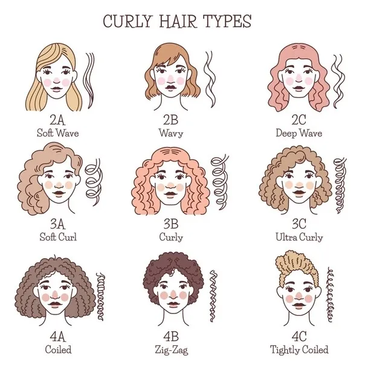

Entre Rizos y Lacios💜
Donde cada textura encuentra su magia
Inicio
Tipos de Rizos
Cuidados
Tips
Contacto
Calendario
🌈 Tipos de Rizos
2A-2C:
Ondas suaves a profundas.
3A-3C:
Rizos definidos en forma de espiral.
4A-4C:
Rizos muy cerrados, afro o en Z.
